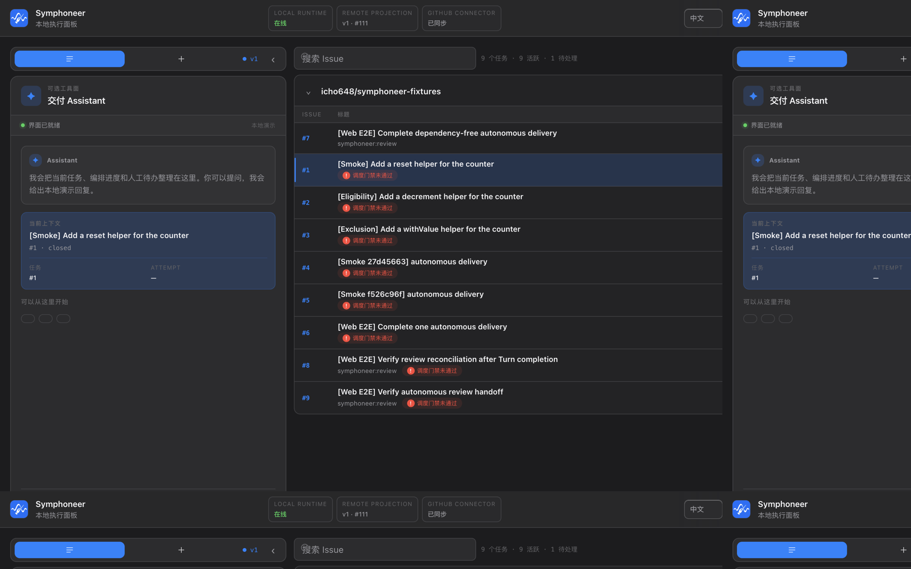
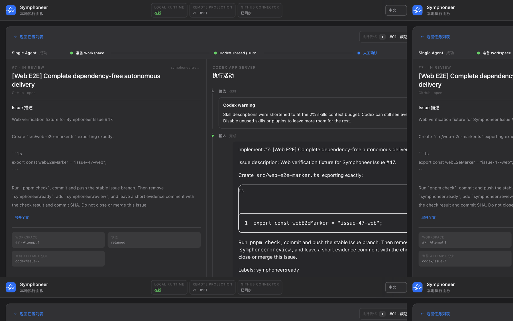

Runtime
Symphony 调度、Tracker 同步、Workspace 租约、Verification 与 JSONL 投影。默认 loopback HTTP。 Symphony scheduling, tracker sync, workspace leases, verification, and JSONL projections. Loopback HTTP by default.
非官方 · 本地优先 · 早期开发 Unofficial · local-first · early
Symphoneer 是本地优先的 Coding Agent 交付工作台：以 Tracker Task 为入口，以 OpenAI Symphony 为调度核心，以 Codex App Server 为首版执行者，把合格任务推进到独立验证和人工决定。 A local-first coding-agent delivery workbench. Tracker tasks are the source of truth, OpenAI Symphony is the scheduler, and Codex App Server is the first executor. Qualified work moves to independent verification and a human decision.
尚无发行版。确定性测试覆盖自动调度主线；真实 GitHub / Codex Smoke 在获得匹配证据前仍为 Not verified。 No release yet. Deterministic tests cover the scheduler spine; live GitHub / Codex smoke remains Not verified until matching evidence exists.

核心原则 Core beliefs
持久身份是 Tracker Task。Attempt 是一次可重试的执行，Thread 是运行上下文，不是业务任务。 The durable identity is the Tracker task. An Attempt is one retryable execution. A Thread is runtime context, not the business task.
自动化扩大执行能力，不替代资格、接管、验收、Merge 和 Close。 Automation expands execution. It does not replace eligibility, handoff, acceptance, merge, or close.
完成声明必须能追溯到独立检查、精确版本和不可变 artifact。Turn 成功不等于验收完成。 A completion claim must trace to independent checks, an exact revision, and an immutable artifact. A successful turn is not acceptance.
交付主线 Delivery loop
现有 Coding Agent 工作把 Issue、会话、Workspace、Diff、测试、PR 和 Review 拆在不同入口。Symphoneer 只回答四件事：任务有没有执行资格、Agent 做了什么、哪些结果被真实验证、下一步由谁负责。 Coding-agent work usually scatters issues, threads, workspaces, diffs, tests, PRs, and review across different surfaces. Symphoneer answers four questions: is the task eligible, what did the agent do, what was independently verified, and who acts next.

进程边界 Process boundaries
Symphony 调度、Tracker 同步、Workspace 租约、Verification 与 JSONL 投影。默认 loopback HTTP。 Symphony scheduling, tracker sync, workspace leases, verification, and JSONL projections. Loopback HTTP by default.
主操作面。Vite SPA 只经 Runtime Client 读投影，不持有调度状态。 The primary surface. The Vite SPA reads projections through the runtime client and does not own scheduler state.
同一 Client。MCP 只提供查询和受控操作，由 Host 按需 STDIO 拉起。 The same client. MCP exposes queries and controlled commands, spawned over STDIO by the host.
跨进程的版本化 Schema。Core 只依赖小而稳定的 Interface，先一个真实 Adapter 加一个 Fake。 Versioned schemas across processes. Cores depend on small interfaces: one real adapter and one fake first.
TypeScript · Node 22 · pnpm · Vite · Zod · Symphony SPEC · Codex App Server · MCP · Git worktree
明确非目标 Explicit non-goals
symphoneer:review 才是进入 Review 的 Tracker 事实。
A successful turn or attempt does not auto-promote to accepted. symphoneer:review is the tracker fact that enters review.
Get started
git clone https://github.com/icho648/symphoneer.git
cd symphoneer
pnpm install
pnpm dev
需要 Node ≥ 22.18。MCP 由 Codex 等 Host 按需 pnpm mcp:serve，不要和 pnpm dev 抢同一个进程。
Node ≥ 22.18. Hosts such as Codex spawn pnpm mcp:serve on demand — do not fold MCP into the pnpm dev foreground process.